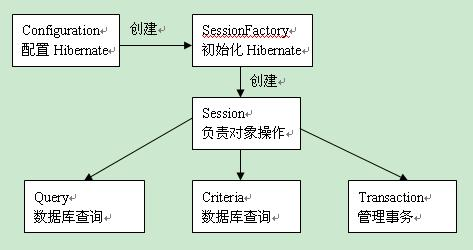

1.Hibernate定义
Hibernate是一种Java语言下的对象关系映射解决方案。 它是一种自由、开源的软件。它用来把对象模型表示的对象映射到基于SQL 的关系模型结构中去，
为面向对象的领域模型到传统的关系型数据库的映射，提供了一个使用方便的框架。
2.Hibernate的作用
Hibernate 不仅管理Java 类到数据库表的映射（包括从Java数据类型到SQL数据类型的映射），还提供数据查询和获取数据的方法，
可以大幅度减少开发时人工使用SQL 和JDBC 处理数据的时间。
它的设计目标是将软件开发人员从大量相同的数据持久层相关编程工作中解放出来。
无论是从设计草案还是从一个遗留数据库开始，开发人员都可以采用Hibernate
3.Hibernate的应用
Hibernate对JDBC进行了非常轻量级的对象封装，使得Java程序员可以随心所欲的使用对象编程思维来操纵数据库。
Hibernate可以应用在任何使用JDBC的场合，它既可以在Java的客户端程序使用，也可以在Servlet/JSP的Web应用中使用。
最具革命意义的是，Hibernate可以在应用EJB（Enterprise JavaBeans是Java应用于企业计算的框架）的J2EE架构中取代CMP，完成数据持久化的重任。
4.Hibernate API简介
(1)提供访问数据库的操作的接口，包括session、Transaction、Query接口；
(2)用于配置Hibernate的接口，Configuration；
(3)间接接口，使应用程序接受Hibernate内部发生的事件，并作出相关的回应，包括：Interceptor、Lifecycle、Validatable；
(4)用于扩展Hibernate功能的接口，如UserType、CompositeUserType、IdentifierGenerator接口。
Hibernate内部还封装了JDBC、JTA（Java Transaction API）和JNDI（Java Naming And Directory Interface）。
其中，JDBC提供底层的数据访问操作，只要用户提供了相应的JDBC驱动程序，Hibernate可以访问任何一个数据库系统。
JTA和JNDI使Hibernate能够和J2EE应用服务器集成。

5.Hibernate的优缺点
(1)优点：
a.Hibernate 使用 Java 反射机制 而不是字节码增强程序来实现透明性。
b.Hibernate 的性能非常好，因为它是个轻量级框架。映射的灵活性很出色。
c.它支持各种关系数据库，从一对一到多对多的各种复杂关系。
(2)缺点:
Hibernate限制您所使用的对象模型。例如，一个持久性类不能映射到多个表。